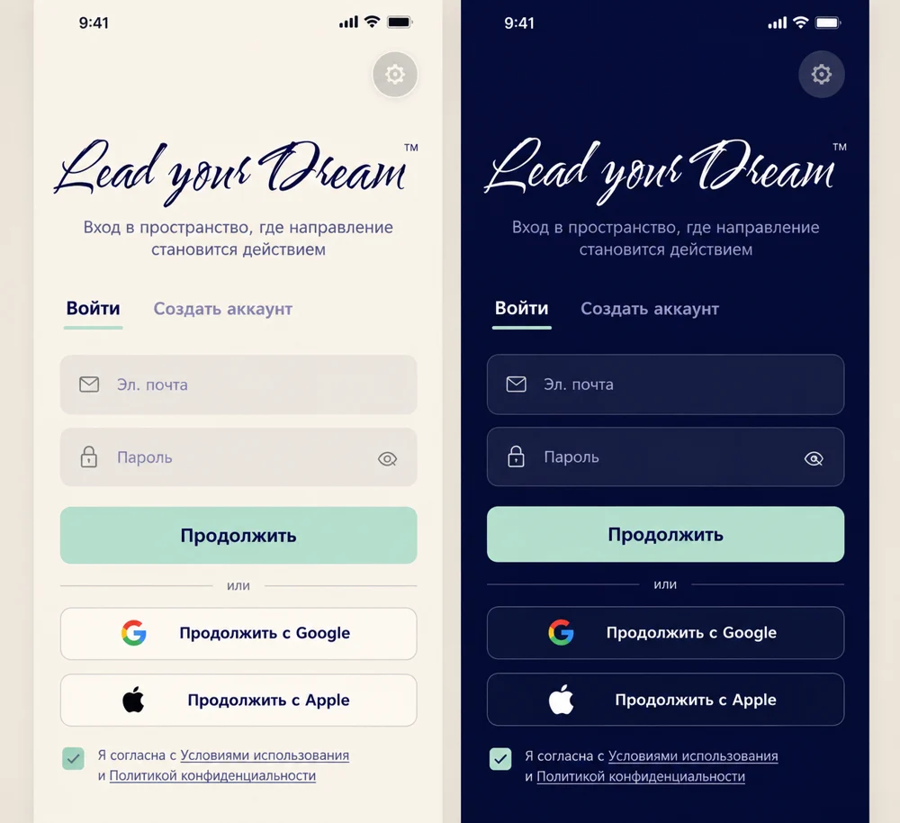

Un poco sobre mí
Antes: la oficina y una vida con horarios ajenos. Ahora: trabajo remoto, la vida con mis hijos en distintos países y mis propios proyectos.
No soy perfecta ni pretendo parecerlo. Tengo tres hijos, y cada uno tiene su propio carácter y sus propias metas. Al ayudarlos, me ayudo a mí misma. Al mismo tiempo, intento construir una vida que no siga un molde y muestro lo que resulta de ello. Así tomó forma mi enfoque personal y, después, un sistema de orientación: un libro, cuadernos y, muy pronto, una aplicación.
y quién sabe qué más me espera…
lo que sostiene todo lo demás
Filosofía de vida divertida
01
Comienza por ti mismo
El cambio no empieza por el mundo que te rodea, sino por cómo te ves a ti mismo y lo que sientes por dentro.
02
Tus deseos, no los ajenos
Distinguir lo que quieres tú de lo que otros esperan de ti.
03
La vida es dinámica
La calidad de vida no es un conjunto de respuestas correctas, sino un movimiento que puedes seguir y ajustar.

donde todo empezó
Filosofía de vida divertida
o el camino hacia ti mismo…
Un libro sobre cómo entender mejor esta vida y conocerte a ti mismo sin sermones: con ejemplos de la vida real y un ejercicio práctico al final. En él encontrarás cosas en las que quizá nunca antes habías pensado.
IMPORTANTE: ESTE LIBRO ESTÁ ÚNICAMENTE EN RUSO. Su compra incluye los archivos PDF y EPUB en ruso. No incluye traducción al español.
Comprar la edición en ruso — PDF + EPUB, 399 ₽Al hacer clic en «Comprar», acepta la Oferta pública. El pago se procesa mediante Robokassa, un servicio de pagos ruso, en rublos rusos (RUB). Pueden admitirse tarjetas emitidas fuera de Rusia, pero no se garantiza la aceptación de una tarjeta concreta.
El pago en línea se está conectando: la compra se abrirá en los próximos días. Mientras tanto, la edición en ruso está disponible en Litres.
algunas líneas del libro
«Creo que muchos habrán escuchado hablar de las crisis de diferentes etapas de la vida. Sobre la crisis de la mediana edad seguro que has oído hablar.»
«El alma siempre sabe en qué cuerpo vivirá su vida terrena. Nuestras almas mismas eligen su cuerpo, género y acontecimientos de la vida para aprender las lecciones que necesitan, y las almas mentoras corrigen, si es necesario, la vida que han elegido.»
«Con los hijos hay que aprender no solo a hablar, sino también a negociar. Esto es muy importante. Son miembros de nuestra sociedad igual que nosotros, solo que un poco más jóvenes. Si no negocias con ellos, el período de su simple sumisión hacia ti terminará muy rápido. Ninguna coacción es eterna.»
«No es en absoluto necesario que la primera persona que, según crees, amaste, sea precisamente ese amor incondicional. Es un estereotipo que nos impone la sociedad.» «…no nos engañamos en absoluto cuando decimos que amamos a más de una persona en nuestra vida. En realidad, en cierta medida amamos a cada persona a quien le decimos esas palabras, y estamos dispuestos a una cooperación mayor, en forma de crear una familia.» «…una de las motivaciones para formar una familia puede ser el amor, pero no siempre.»
primero en papel
Cómo una filosofía se convirtió en un sistema de orientación
Mi filosofía nunca fue pensada como un conjunto de reglas para los demás. Es mi enfoque personal de la vida. Con el tiempo, de él nació un sistema de orientación —un libro, cuadernos y, muy pronto, una aplicación— que ayuda a cada persona a escucharse mejor y a elegir su propio rumbo.
01
Libro
La filosofía y mi enfoque personal, puestos en palabras. La tirada de prueba de la edición en ruso se agotó.
02
Cuadernos
Un cuaderno de metas y el diario de autora «Comienza por ti mismo». La tirada de prueba en ruso se agotó.
03
Aplicación · muy pronto
Lead your Dream™: un sistema de orientación siempre a mano.
Primeras reseñas de lectores del libro y compradores de los cuadernos · ediciones en ruso
4,9 · 13 reseñas · Wildberries y Litres


Muy pronto · App Store · Google Play
Lead your Dream™
Un espacio donde el rumbo se convierte en acción.
— Cinco áreas de la vida de un vistazo
— La evolución de tu estado, no una evaluación puntual
— Un asistente de IA que te ayuda a no perder el rumbo

Usamos cookies analíticas para entender cómo los visitantes usan este sitio. Se activan solo con su consentimiento. Más información en nuestra Política de tratamiento de datos personales.